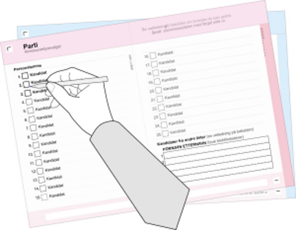

1. Ta stemmesedlene du vil bruke: en for kommunestyrevalget og en for fylkestingsvalget. I Oslo er det ikke fylkestingsvalg.
2. Gjør eventuelle endringer på stemmesedlene. Veiledning står på stemmeseddelen. 
3. Brett hver av stemmesedlene med partinavnet inn og feltet for stempling ut – da kan ingen se hva du stemmer. Det skal ikke brukes konvolutt eller annet omslag rundt stemmesedlene.
4. Gå til en valgfunksjonær og få stempel på utsiden av stemmesedlene. Begge stemmesedlene må ha stempel for å bli godkjent.
5. Legg de stemplede stemmesedlene i valgurnen.
Toppen av siden